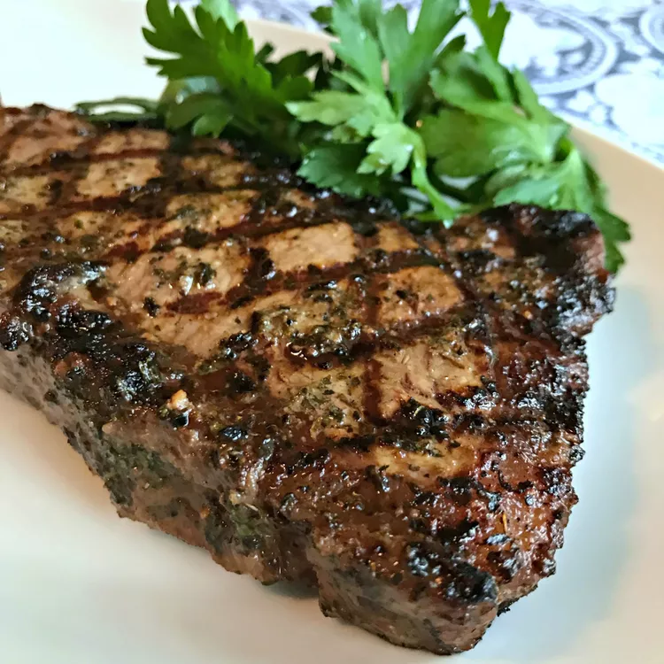

Best Steak Marinade Ever

Description
We're not exaggerating with the title: This is truly the best steak marinade recipe in existence.
Ingredients
- Oil
- Sauces
- Lemon Juice
- Spices and seasonings
Steps
Place olive oil, soy sauce, lemon juice, Worcestershire sauce, basil, garlic powder, parsley, white pepper,
minced garlic, and hot pepper sauce in a blender; blend on high speed until thoroughly combined, about 30
seconds.